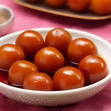

One Stop Destination for Your Favourite Dishes
Chicken Tandoori
Ingredients
- Chicken
- Tandoori Masala
- Oil
- Onion
- Garlic
Recipe
- Preheat oven to 225°C (450°F).
- In a large skillet, sauté onions and garlic until softened.
- Add chicken, cook for 5 minutes, until cooked through.
- Add spices, oil, and cook for another 5 minutes.
- Transfer chicken to a plate and garnish with tandoori chicken masala.
- Serve with rice and mixed vegetable.

Biriyani
Ingredients
- Rice
- Chicken
- Potatoes
- Onion
- Garlic
- Full pack of Spices
Recipe
- Marinate the chicken.
- Parboil the Rice.
- Fry whole potatoes until golden. Add a pinch of turmeric and salt for flavor.
- Sauté sliced onions in ghee and oil until golden brown. Add marinated chicken and cook until tender.
- In a large pot, layer rice, chicken, fried potatoes, boiled eggs, and a drizzle of saffron milk. Repeat the layers, ending with rice.
- Seal the pot with a tight lid or dough and cook on low flame for 20-30 minutes. This allows the flavors to infuse.

Gulab Jamun
Ingredients
- Baking Soda
- Milk Powder
- Ghee
- Sugar
- Lemon Juice
- Milk
Recipe
- Mix sugar and water in a pan. Heat until the sugar dissolves.
- Add cardamom powder, saffron strands, and rose essence if using. Simmer for 5-7 minutes. Turn off the heat and keep warm.
- Add ghee and mix until crumbly. Gradually add milk to form a soft, smooth dough. Rest for 10 minutes.
- Divide the dough into small portions and roll into smooth, crack-free balls.
- Heat ghee or oil in a deep pan on medium heat. It should be warm, not smoking hot.
- Fry the balls on low heat, stirring gently, until they turn golden brown. Remove and drain on paper towels.
- Add the fried balls to the warm sugar syrup. Let them soak for at least 30 minutes, allowing them to absorb the syrup and soften.
